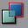

UDN
Search public documentation:
CreatingLevels
日本語訳
中国翻译
한국어
Interested in the Unreal Engine?
Visit the Unreal Technology site.
Looking for jobs and company info?
Check out the Epic games site.
Questions about support via UDN?
Contact the UDN Staff
中国翻译
한국어
Interested in the Unreal Engine?
Visit the Unreal Technology site.
Looking for jobs and company info?
Check out the Epic games site.
Questions about support via UDN?
Contact the UDN Staff
Creating Levels
- Creating Levels
- Overview
- Getting Started
- Level Basics
- Advice from Epic Level Designers
- Conclusion
Overview
Getting Started
Level Basics
BSP
BSP forms the hull of the world. It is the main occluder for the visibility/networking subsystems of the engine, and forms the majority of the large geometry pieces in your level. To add BSP geometry to the world, you need to use the Builder Brush (the red one). To add a basic cube to the world, try this:- Right click the Cube Brush Builder button.
- Enter the following Properties values: X=1024,Y=1024,Z=32.
- Click the Properties Build button to update the changes.
- Click the Add Brush button. 
Lights
Playing the level at this point would be somewhat pointless as you can't see anything yet. So add a light. Right click roughly in the center of the BSP surface and select the menu item Add Light from the Add Actor sub menu. Using the widget, drag the light up a little so it can cover the area better. Switch the viewport into a view mode that supports lighting and you should have something like this: This method adds a Point Light. To add other kinds of light, open the Generic Browser, switch to the Actors tab which shows the various Actor classes, then open the Light category and select the class you want. When you right click in the level as before and you should have the option of adding the selected light class at that location. See the Lighting Reference and Lightmass pages for more information on lighting.Player Starts
We need to tell the game where the player will start from when this level loads, so right click anywhere on the bsp surface and select the PlayerStart menu item from the Add Actor submenu. This should give you something that looks like this:
Playing The Level
Before you run around the level and see what you've created, build the level by clicking the Build Geometry () button on the toolbar. Once the geometry is built, you can either choose either the Play In Editor (PIE) feature, or the Play From Here feature. Press the ESCAPE key to close the game window and get back into the editor.Play In Editor
Click the Play This Level button . This will load the level and you will start at the location of the Player Start.Play From Here
As you work on your level, it will inevitably expand to a size where running from the start location to the area you want to test becomes a hassle. If you want to play from any place in the level, just right click the floor in your level and select the menu item Play From Here. This will load the level in the game as normal, but your starting location will be where you clicked.Additional Geometry
Player Containment
You may have noticed when you played the level that you are able to step over the edge of your BSP and fall into the void. The engine makes no attempts to limit the players movement in the level, so that is left up to you. You simply have to stop them from falling off into the void with more BSP. For example, let's create a quick wall to see how this works:- Right click the Cube Brush Builder button.
- Enter the following Properties values: X=1024,Y=32,Z=256.
- Click the Properties Build button to update the changes.
- Click the Add Brush button.
Windows, Doors And Murder Holes
The Unreal Engine supports other BSP gemoetry operations besides addition - like subtraction. Let's make a hole in the floor.- Right click the Cube Brush Builder button.
- Enter the following Properties values: X=256,Y=256,Z=512.
- Click the Properties Build button to update the changes.
- Click the Subtract Brush button.
Sky Domes
Skies in Unreal Engine 3 levels are created by applying a sky material onto the interior of a very large dome that is placed over the world. The material typically has a panning set of cloud textures blended with a fog color at the edges that blends with the world fog. An emissive mask is used for the sun in a few materials. The layout of textures in the material is dependent on the UV mapping for the dome mesh, some of them are planar-mapped, and some are spherically mapped. These materials are applied to the dome, and the dome is placed in the world and scaled up to a very large size. This lessens the perception of parallaxing.Working Off The Origin
To keep things simple, we haven't moved the builder brush at all. Of course, you're free to do that and you can use the same builder brush to add/subtract as many brushes as you like. Try it. Select the builder brush and use the widget to drag it around, rotate it, etc and add, subtract some new brushes. You can come up with some nice looking shapes with a minimal of effort once you are familiar with the tools and operations in the editor. For example, this scene is done entirely in BSP: Of course, things look even nicer when you start applying decorative touches like light colors, different materials and static meshes.Light Colors
OK, getting back to our original level here, let's change the color of that light to a nice orange hue. Double click the light in the viewport and the actor property window will pop up (or press F4). Open up the Light category, then open up LightComponent, and then click on Color. Clicking the magnifying glass button here you will get the standard Windows color selector dialog. Select a nice hue of orange and click OK. The scene will change to something like this:Materials
Applying a material to the BSP surface is as easy as selecting the surface you want to apply the material to and clicking the material in the generic browser. The material is automatically applied to all selected surfaces. I opened up one of our texture packages here and quickly applied some materials to our BSP surfaces: For more information on Materials, see the Materials Tutorial.Static Meshes
A static mesh is a nice way to quickly add detail to a level without having to build it all by hand. Static meshes are too large of a topic to cover in this article, but we'll cover some basics here. To add a static mesh to your level, you need to select it in the generic browser first. Then right-click somewhere in your level and select the menu item Add StaticMesh from the Add Actor submenu. This adds the static mesh into your level. You can then drag it, rotate it, etc. and get it into the position that you want. I've added a few static meshes to our level (and changed the light color back to white so it's easier to see): As you can see, they are lit exactly the same as the BSP and you really can't tell the difference between them and the BSP surfaces. Static meshes are a great way to add lots of detail to your level with minimal effort. For more information on Static Meshes, see the Static Mesh Tutorial.Terrain
The first step is to create the terrain. In the Actor tab of the Generic Browser, select the Terrain Actor, which is under Info. Right-click in the world and select Add Terrain Here. Right-click on the newly-placed Terrain Actor and select Properties (or press F4). Under the Terrain section, change the NumPatchesX and NumPatchesY values to be 4 each. In the 3D viewport, the terrain will be black until a light is placed. In the Actor tab of the Generic Browser, select the Directional Light Actor, which is under Light. Right-click in the world and select Add Directional Light Here. Position and rotate the light as needed. For the Terrain, you need at least one Layer. Right-click on the newly-placed Terrain Actor and select Properties (or press F4). Under the Terrain section, click on Add New Item next to the Layers property. A new terrain layer setup will need to be entered into the Setup property of the newly-created layer. In the Generic tab of the Generic Browser, filter the resource types by Terrain Layer. Select the desired Terrain Layer, and in the Setup property for the Terrain Layer select Use Current. From there, you can go into Terrain Editing mode to manipulate the Terrain by painting the terrain surface to adjust the height values. For more terrain-related information, see the Setting Up Terrain and Using Terrain pages.Emitters and Particle Effects
Sound
For an explanation of the different types of ambient sounds that you can use in your level, see the Sound Actors? page.Navigation AI
For more information on setting up Pathnodes and using AI Paths, see the Navigation AI page.Level Streaming
See the Level Streaming guide for more information on setting up a persistent level and multiple streamed levels.Level Optimization
See the Level Optimization guide about getting more performance out of your levels and the Map Errors page for an explanation of each warning.Advice from Epic Level Designers
Some tips... probably really obvious to experienced level designers; but might be helpful for beginners:
|
| Once you've got people capable of basic bsp construction and level basics, I'd reccomend getting people turned onto the scripting side quickly. It's exciting stuff for people who haven't programmed or scripted before, and it's a creative goldmine for people starved to get their design goals onto a screen. Get a basic empty shell with some triggers and dynamic lights and have them go to town with switches, gates, toggles, actor factories, attaching objects, etc... in no time they can be taking their own initiative and implementing their own design ideas. That said, learning basic decent visual meshing is what gets people jobs. It's sad but true that visual candy will trump scripting experience in 9 out of 10 hiring situations for LDs. Get people hooked early on giving the player feedback with every event. Everyone needs to know how to trigger a basic screen shake, spawn particle effects, and play sounds. If they take an hour to make some building fall and form cover or something, for God's sake take another 5 minutes to add those 3 things and make that event an authentic "experience", even if they're placeholder. Mocked up a boss fight? If he's not making any sound there's about zero chance you'll get anyone excited about it. Outputting "big fireball goes here" to a log just doesn't do it for people, haha, go figure. Somewhat off topic, but every university student piece I've ever seen treats player feedback as an optional last minute polish item, but in reality this is core stuff that puts the smile on the player's face. I wish instructors would get the importance of feedback burned into their heads early. If they need to drop a few far left field design bulletpoints to get the basic player interactions feeling solid and fun, well, that's a far greater service to them than simply indulging their design whims with no parameters and allowing them to wander aimlessly through an overly ambitious design. I'm sure that flies in the face of many people's perceptions that a student should take the opportunity with no real business or production constraints to "stretch the envelope"... but I think a simple design that has good feedback and solid interactions is a far better use of their time than heading off on their Derek Smart grand opus before they're ever out of school. Prefabs for us are a collection of instances, each prefab will tack changes so that when you update a prefab it won't blow over any changes you've made to an individual prefab. So you can have a prefab door with a build in dynamic red light over it, place it all over, change one prefab light to be green, later you tweak the shade of red used on all the doors and update the main prefab, all the red lights will update to the new shade, but since you've altered the one prefab instance to show a green light that one will stay green even while all the others are updated. So basically they're instances but they remember anything you've changed about one particular instance so that when new changes are propogated down you don't lose individual changes. |
| Texture atlassing is only a win for meshes with small textures that are littered all over the level. For regular meshes we still go with a single texture (or well, set of textures if you look at normal, diffuse, ...) per object. Stuff like debris on the ground, signs and all the little stuff is a good candidate for atlassing as it needs to be always streamed in anyways given how its used in a level. |
| Make sure you shell out your map thoroughly in BSP first. Don't add any meshes or tinker with lighting. Just throw in massive point lights and keep it simple in BSP only for the prototyping. If it's fun as bright checkered BSP, it'll be even more fun when you make it pretty. This is very important. To expand a little: Schedule gameplay/scripting and visuals as separate passes! It sounds obvious enough but a lot of projects I've worked on in the past didn't do this and suffered from it imo. If a designer is tasked with doing visuals and gameplay/scripting at the same time, somewhere one of those things is going to get the shaft. And usually it's the gameplay. It's just far too common to hit a roadblock waiting on code or assets to come online and burn a week "rearranging the furniture" instead of solving a gameplay problem or polishing script early on. If these tasks are scheduled independently of one another, even if it's the same guy doing both, you ensure that visuals and gameplay/scripting each get the full attention they deserve. Kismet and Matinee in UE3 makes this easier because you can schedule near final scripting VERY early on in a project and designers can make or at least prototype just about anything without ever bothering a programmer. |